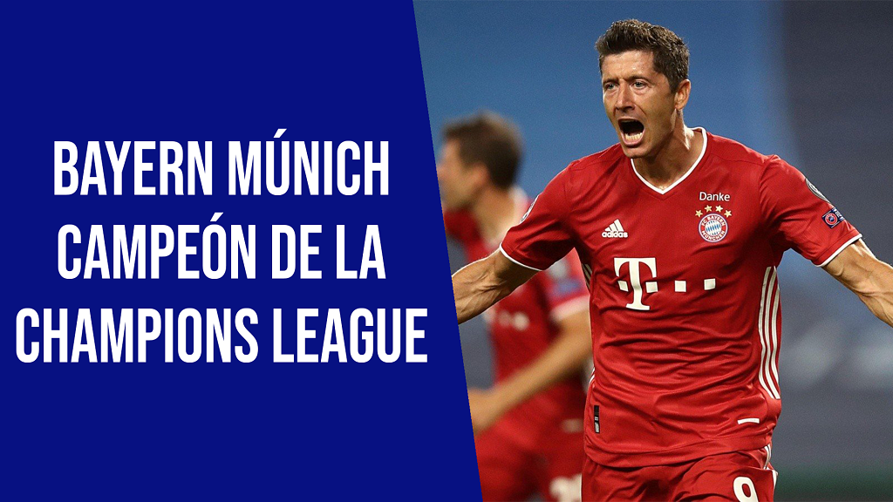

El Bayern Múnich logró su sexto título de la Copa de Europa/Liga de Campeones al imponerse al París Saint Germain por 1-0. El conjunto bávaro añade esta corona a las logradas en 1974, 1975, 1976, 2001 y 2013, y alcanza al Liverpool, ganador de la pasada edición del máximo torneo continental, en la tercera posición, tras el Real Madrid, rey de la competición con trece títulos, y el Milan, que tiene siete. El PSG, que llegaba a la final por primera vez en su historia, no pudo convertirse en el segundo conjunto francés campeón tras el Olympique Marsella, que ganó el título en 1993.
El Bayern Múnich se proclamó campeón de la Liga de Campeones por sexta vez, lo que lo pone entre los más ganadores de la historia. Domingo histórico en el fútbol europeo. Los alemanes conquistaron la UEFA Champions League 2019-2020 tras vencer (1-0) al París Saint-Germain, en la gran final. El equipo de Hans-Dieter Flick alzó el trofeo en el Estádio da Luz, ubicado en la ciudad de Lisboa, Portugal. Un solitario gol de Kingsley Coman le permitió al Bayern coronarse como el mejor equipo del torneo. El PSG también tuvo varias posibilidades de quedarse con el título, pero la falta de puntería de sus delanteros le terminó pasando factura. Hecho que permitió disfrutar de una final bastante entretenida. Título más que merecido para el conjunto bávaro, que clasificó como líder del Grupo B con 18 puntos; en octavos eliminó al Chelsea FC (7-1); en cuartos humilló al FC Barcelona (8-2); y en semifinales se impuso al Olympique de Lyon (3-0). Números que confirman que fue el mejor de todos. Así las cosas, los de Múnich ganaron por sexta vez la Champions League (1974, 1975, 1976, 2001, 2013 y 2020). Una gesta más que impresionante si tenemos en cuenta que, además, ha disputado otras cinco finales en el torneo de clubes más importantes del mundo.
Con este ya son seis los títulos del cuadro germano en el torneo continental. Los rojos subieron un escalón y ahora están en el cuarto lugar de la tabla de los máximos ganadores de la historia. Solamente AC Milan (7) y Real Madrid (13) tienen en sus vitrinas más trofeos que ellos. Como si fuera poco, el Bayern también cuenta en su palmarés con 30 Bundesligas, 20 Copas de Alemania, 7 Supercopas de Alemania, 6 Copas de la Liga de Alemania; 2 Copas Intercontinentales, 1 Mundial de Clubes, 1 Supercopa de Europa y Liga de Europa y 1 Recopa de Europa. Distinciones que lo confirman como el equipo más grande del país y de los más importantes del continente.